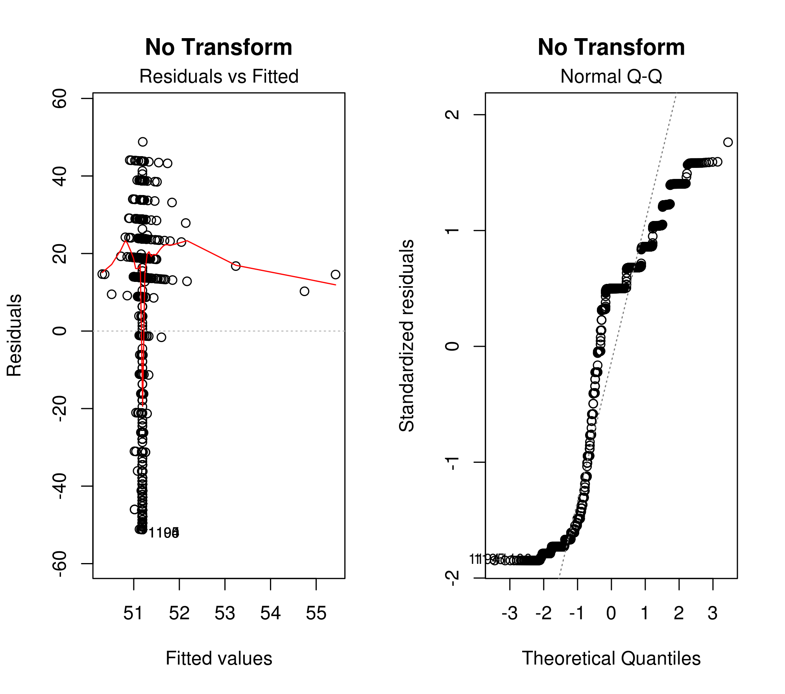
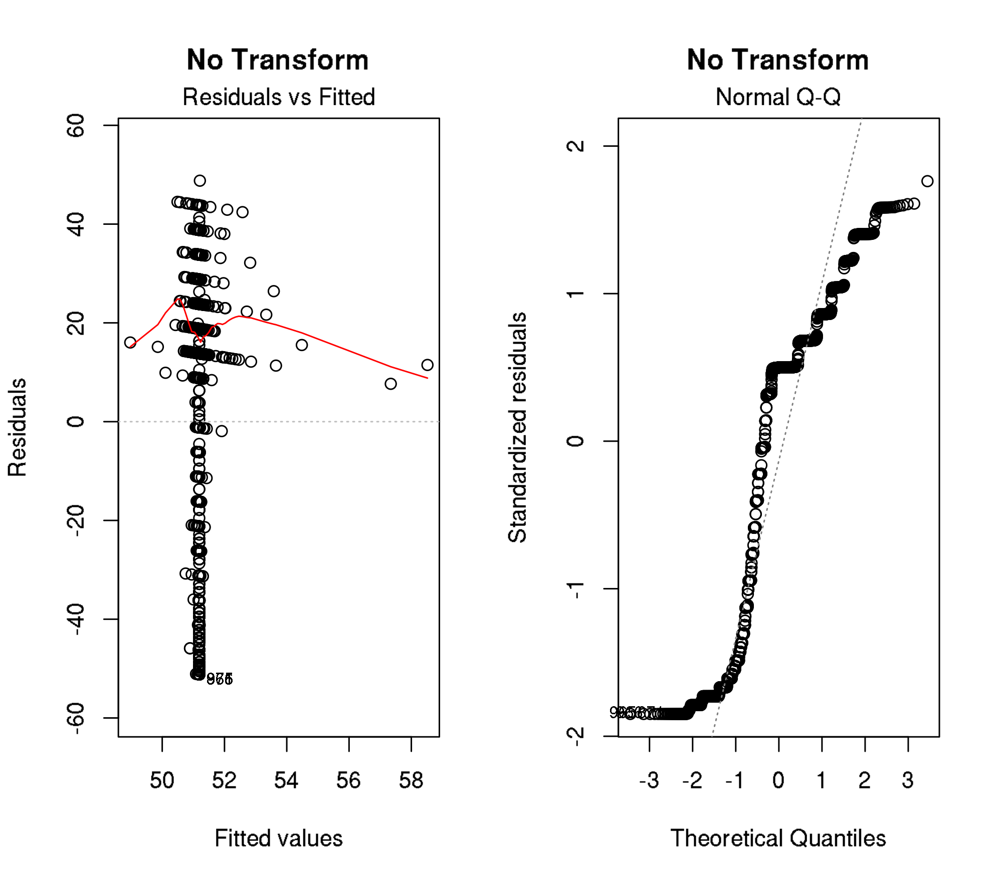

Last updated: 2019-09-15
Checks: 7 0
Knit directory: 2019-feature-selection/
This reproducible R Markdown analysis was created with workflowr (version 1.4.0). The Checks tab describes the reproducibility checks that were applied when the results were created. The Past versions tab lists the development history.
Great! Since the R Markdown file has been committed to the Git repository, you know the exact version of the code that produced these results.
Great job! The global environment was empty. Objects defined in the global environment can affect the analysis in your R Markdown file in unknown ways. For reproduciblity it’s best to always run the code in an empty environment.
The command set.seed(20190522) was run prior to running the code in the R Markdown file. Setting a seed ensures that any results that rely on randomness, e.g. subsampling or permutations, are reproducible.
Great job! Recording the operating system, R version, and package versions is critical for reproducibility.
Nice! There were no cached chunks for this analysis, so you can be confident that you successfully produced the results during this run.
Great job! Using relative paths to the files within your workflowr project makes it easier to run your code on other machines.
Great! You are using Git for version control. Tracking code development and connecting the code version to the results is critical for reproducibility. The version displayed above was the version of the Git repository at the time these results were generated.
Note that you need to be careful to ensure that all relevant files for the analysis have been committed to Git prior to generating the results (you can use wflow_publish or wflow_git_commit). workflowr only checks the R Markdown file, but you know if there are other scripts or data files that it depends on. Below is the status of the Git repository when the results were generated:
Ignored files:
Ignored: .Rhistory
Ignored: .Rproj.user/
Ignored: .Ruserdata/
Ignored: .drake/
Ignored: analysis/figure/
Ignored: analysis/rosm.cache/
Ignored: data/
Ignored: inst/Benchmark for Filter Methods for Feature Selection in High-Dimensional Classification Data.pdf
Ignored: inst/study-area-map/study-area.qgs~
Ignored: log/
Ignored: packrat/lib-R/
Ignored: packrat/lib-ext/
Ignored: packrat/lib/
Ignored: reviews/
Ignored: rosm.cache/
Ignored: tests/
Untracked files:
Untracked: .drake_history/
Unstaged changes:
Modified: R/06-mlr-paper.R
Modified: _drake.R
Modified: code/05-modeling/paper/feature-importance.R
Modified: code/06-benchmark-matrix.R
Modified: code/061-aggregate.R
Modified: code/98-paper/ieee/pdf/correlation-filter-nri-1.pdf
Modified: code/98-paper/ieee/pdf/correlation-nbins-1.pdf
Modified: code/98-paper/ieee/pdf/defoliation-distribution-plot-1.pdf
Modified: code/98-paper/ieee/pdf/spectral-signatures-1.pdf
Modified: code/98-paper/ieee/performance-best-per-learner.tex
Modified: code/98-paper/ieee/performance-top-20.tex
Modified: code/98-paper/journal/defoliation-distribution-plot-1.pdf
Modified: code/move-figures.R
Deleted: docs/figure/spectral-signatures.Rmd/spectral-signatures-1.pdf
Deleted: docs/logo/life.jpg
Note that any generated files, e.g. HTML, png, CSS, etc., are not included in this status report because it is ok for generated content to have uncommitted changes.
These are the previous versions of the R Markdown and HTML files. If you’ve configured a remote Git repository (see ?wflow_git_remote), click on the hyperlinks in the table below to view them.
| File | Version | Author | Date | Message |
|---|---|---|---|---|
| Rmd | 518d0cb | pat-s | 2019-09-01 | style files using tidyverse style |
This document originated from the fear of having a response variable which is not normally distributed “enough”.
The response variable looks as follows:

When applying the Shapiro-Wilk test we get
Shapiro-Wilk normality test
data: vi_data$defoliation
W = 0.86183, p-value < 2.2e-16Visualizing model residuals of LASSO and RF to see how they differ. The LASSO “predicted vs. fitted” plot shows limited model power.


The following transformations of the response variable were done to check if it they have an effect on the “residuals vs. fitted” and “QQ-Plot” shown above.
One option to enforce more normality of a variable is by applying a power transformation. The Box-Cox power transformation estimates a lambda value from the variable. Next, the transformation can be applied via
\[(y^lambda - 1) / lambda\]
There is a Stackoverflow question that shows how to do this.
R version 3.5.2 (2018-12-20)
Platform: x86_64-pc-linux-gnu (64-bit)
Running under: CentOS Linux 7 (Core)
Matrix products: default
BLAS: /opt/R/3.5.2/lib64/R/lib/libRblas.so
LAPACK: /usr/lib64/libopenblaso-r0.3.3.so
locale:
[1] C
attached base packages:
[1] stats graphics grDevices utils datasets methods base
other attached packages:
[1] ggplot2_3.1.0 tidyselect_0.2.5 drake_7.5.2
loaded via a namespace (and not attached):
[1] Rcpp_1.0.0 txtq_0.1.4 lattice_0.20-38
[4] tidyr_0.8.2 foreach_1.4.4 assertthat_0.2.0
[7] glmnet_2.0-16 rprojroot_1.3-2 digest_0.6.18
[10] R6_2.4.0 smoof_1.5.1 plyr_1.8.4
[13] backports_1.1.3 evaluate_0.13 httr_1.4.0
[16] pillar_1.3.1 rlang_0.3.4 lazyeval_0.2.1
[19] misc3d_0.8-4 data.table_1.12.0 whisker_0.3-2
[22] Matrix_1.2-15 checkmate_1.9.1 rmarkdown_1.13
[25] labeling_0.3 mco_1.0-15.1 splines_3.5.2
[28] stringr_1.4.0 htmlwidgets_1.3 igraph_1.2.4
[31] munsell_0.5.0 compiler_3.5.2 xfun_0.5
[34] DiceKriging_1.5.6 ParamHelpers_1.12 pkgconfig_2.0.2
[37] mlr_2.15.0 BBmisc_1.11 htmltools_0.3.6
[40] tibble_2.0.1 workflowr_1.4.0 codetools_0.2-16
[43] viridisLite_0.3.0 crayon_1.3.4 dplyr_0.8.0.1
[46] withr_2.1.2 grid_3.5.2 jsonlite_1.6
[49] gtable_0.2.0 git2r_0.24.0 magrittr_1.5
[52] storr_1.2.1 mlrMBO_1.1.2 scales_1.0.0
[55] cli_1.1.0 stringi_1.3.1 fs_1.2.6
[58] parallelMap_1.4 filelock_1.0.2 lhs_1.0.1
[61] fastmatch_1.1-0 plot3D_1.1.1 RColorBrewer_1.1-2
[64] iterators_1.0.10 tools_3.5.2 RJSONIO_1.3-1.1
[67] glue_1.3.0 purrr_0.3.0 parallel_3.5.2
[70] survival_2.43-3 yaml_2.2.0 colorspace_1.4-0
[73] base64url_1.4 plotly_4.8.0 knitr_1.23